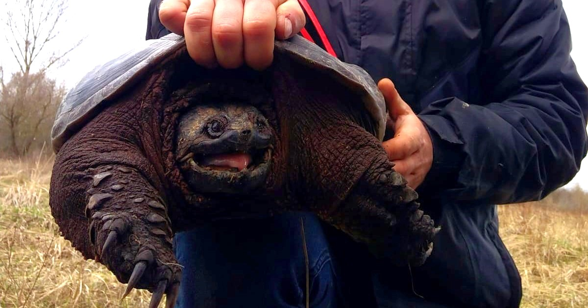

Jak przygotować akwarium dla żółwia wodnego?

Mały pływający żółwik
Zanim przystąpisz do hodowli żółwia, ważne jest przygotowanie odpowiedniego akwarium.
Minimalna wielkość to 100 litrów dla jednego dorosłego żółwia, ale im większe, tym lepiej.
Akwarium musi zawierać czystą wodę do pływania oraz wyspę lądową, na której żółw będzie mógł się wygrzewać.
Woda powinna mieć temperaturę 24-28°C, natomiast miejsce do wygrzewania się powinno mieć około 30-35°C.